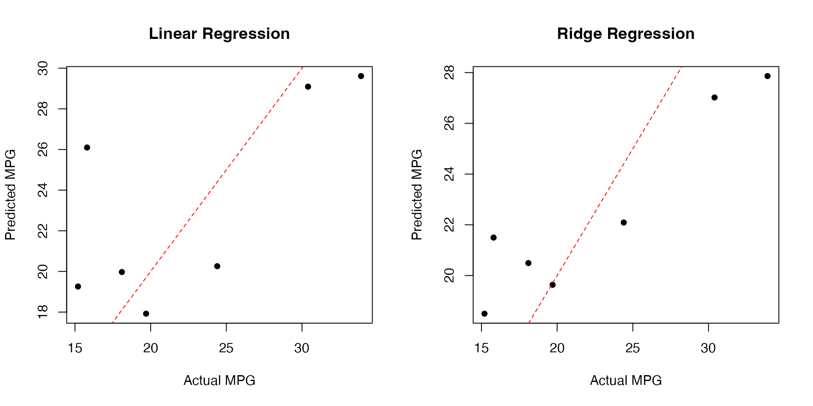

intro_S3.RmdThe tisthemachinelearner package provides a simple R
interface to scikit-learn models through Python’s
tisthemachinelearner package. This vignette demonstrates
how to use the package with R’s built-in mtcars
dataset.
We’ll use the classic mtcars dataset to predict miles
per gallon (mpg) based on other car characteristics:
# Load data
data(mtcars)
head(mtcars)
#> mpg cyl disp hp drat wt qsec vs am gear carb
#> Mazda RX4 21.0 6 160 110 3.90 2.620 16.46 0 1 4 4
#> Mazda RX4 Wag 21.0 6 160 110 3.90 2.875 17.02 0 1 4 4
#> Datsun 710 22.8 4 108 93 3.85 2.320 18.61 1 1 4 1
#> Hornet 4 Drive 21.4 6 258 110 3.08 3.215 19.44 1 0 3 1
#> Hornet Sportabout 18.7 8 360 175 3.15 3.440 17.02 0 0 3 2
#> Valiant 18.1 6 225 105 2.76 3.460 20.22 1 0 3 1
# Split features and target
X <- as.matrix(mtcars[, -1]) # all columns except mpg
y <- mtcars[, 1] # mpg column
# Create train/test split
set.seed(42)
train_idx <- sample(nrow(mtcars), size = floor(0.8 * nrow(mtcars)))
X_train <- X[train_idx, ]
X_test <- X[-train_idx, ]
y_train <- y[train_idx]
y_test <- y[-train_idx]Let’s start with a simple linear regression model:
# Fit linear regression model
reg_linear <- regressor(X_train, y_train, "LinearRegression")
# Make predictions
predictions <- predict(reg_linear, X_test)
# Calculate RMSE
rmse <- sqrt(mean((predictions - y_test)^2))
cat("Linear Regression RMSE:", rmse, "\n")
#> Linear Regression RMSE: 4.876167
# Compare actual vs predicted values
results <- data.frame(
Actual = y_test,
Predicted = predictions,
Difference = y_test - predictions
)
print(results)
#> Actual Predicted Difference
#> 1 18.1 19.97085 -1.870846
#> 2 24.4 20.25755 4.142451
#> 3 30.4 29.09144 1.308558
#> 4 33.9 29.61140 4.288603
#> 5 15.2 19.25911 -4.059112
#> 6 15.8 26.09742 -10.297416
#> 7 19.7 17.92195 1.778054Now let’s try Ridge regression with cross-validation for hyperparameter tuning:
# Fit ridge regression model
reg_ridge <- regressor(X_train, y_train, "RidgeCV",
alphas = c(0.01, 0.1, 1, 10))
# Make predictions
predictions_ridge <- predict(reg_ridge, X_test)
# Calculate RMSE
rmse_ridge <- sqrt(mean((predictions_ridge - y_test)^2))
cat("Ridge Regression RMSE:", rmse_ridge, "\n")
#> Ridge Regression RMSE: 3.822053Let’s visualize how well our predictions match the actual values:
# Create scatter plot of actual vs predicted values
par(mfrow = c(1, 2))
# Linear Regression plot
plot(y_test, predictions,
xlab = "Actual MPG",
ylab = "Predicted MPG",
main = "Linear Regression",
pch = 16)
abline(a = 0, b = 1, col = "red", lty = 2)
# Ridge Regression plot
plot(y_test, predictions_ridge,
xlab = "Actual MPG",
ylab = "Predicted MPG",
main = "Ridge Regression",
pch = 16)
abline(a = 0, b = 1, col = "red", lty = 2)
Compare the performance of both models:
comparison <- data.frame(
Model = c("Linear Regression", "Ridge Regression"),
RMSE = c(rmse, rmse_ridge)
)
print(comparison)
#> Model RMSE
#> 1 Linear Regression 4.876167
#> 2 Ridge Regression 3.822053This example demonstrates how to:
The tisthemachinelearner package makes it easy to use
scikit-learn models with R data, combining the familiarity of R data
structures with the power of Python’s machine learning ecosystem.
sessionInfo()
#> R version 4.3.3 (2024-02-29)
#> Platform: x86_64-apple-darwin20 (64-bit)
#> Running under: macOS Sonoma 14.2
#>
#> Matrix products: default
#> BLAS: /Library/Frameworks/R.framework/Versions/4.3-x86_64/Resources/lib/libRblas.0.dylib
#> LAPACK: /Library/Frameworks/R.framework/Versions/4.3-x86_64/Resources/lib/libRlapack.dylib; LAPACK version 3.11.0
#>
#> locale:
#> [1] en_US.UTF-8/en_US.UTF-8/en_US.UTF-8/C/en_US.UTF-8/en_US.UTF-8
#>
#> time zone: Europe/Paris
#> tzcode source: internal
#>
#> attached base packages:
#> [1] stats graphics grDevices utils datasets methods base
#>
#> other attached packages:
#> [1] reticulate_1.41.0 tisthemachinelearner_0.3.1
#>
#> loaded via a namespace (and not attached):
#> [1] cli_3.6.4 knitr_1.49 rlang_1.1.5 xfun_0.50
#> [5] png_0.1-8 textshaping_1.0.0 jsonlite_1.9.0 htmltools_0.5.8.1
#> [9] ragg_1.3.3 sass_0.4.9 rmarkdown_2.29 grid_4.3.3
#> [13] evaluate_1.0.3 jquerylib_0.1.4 fastmap_1.2.0 yaml_2.3.10
#> [17] lifecycle_1.0.4 compiler_4.3.3 fs_1.6.5 Rcpp_1.0.14
#> [21] htmlwidgets_1.6.4 systemfonts_1.1.0 lattice_0.22-5 digest_0.6.37
#> [25] R6_2.6.1 bslib_0.9.0 Matrix_1.6-5 tools_4.3.3
#> [29] pkgdown_2.1.1 cachem_1.1.0 desc_1.4.3